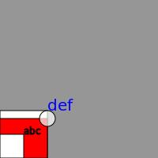

k1lib.p5 module
A quick and dirty tiny module emulating the p5js environment. I made this because I have used Processing extensively in the past, and would like a simple interface to draw stuff. Processing doesn’t really exist on Python (yes, I know of Processing’s python mode, but it’s Jython, not pure python!), so I made this based upon the drawsvg library. Download that before using this module. Example:
from k1lib.imports import *
p5.newSketch(200, 200); p5.background(150)
p5.rect(0, 0, 60, 60)
with p5.context(): # all style changes here will be reverted on exiting the context
p5.fill(255, 0, 0)
p5.rect(0, 0, 60, 50)
p5.rect(0, 0, 30, 30)
p5.fill(255, 180); p5.ellipse(60, 50, 20)
p5.textSize(12); p5.text("abc", 30, 30)
with p5.context():
p5.fill(0, 0, 255); p5.noStroke(); p5.textSize(20)
p5.text("def", 60, 60)
p5.img() # get PIL image
Result:
- k1lib.p5.color(r, g=None, b=None, alpha=255)[source]
Get hex representation of a color. Example:
p5.color(255, 0, 0) # returns "#ff0000ff", red p5.color(255, 0, 0, 100) # returns "#ff000064", transparent red p5.color(255, 100) # returns "#ffffff64", transparent white
- k1lib.p5.newSketch(w, h, flip=True, pad=0, scale=1, xoff=0, yoff=0)[source]
Creates a new sketch with specified height and width.
If
pad,scale,xofforyoffis specified, it will pad the sketch then scale it up with that amount. In other words, the true width (in pixels) is going to bew*scale + 2*pad, true height ish*scale + 2*pad. Then, all coordinates will be(x-xoff)*scale + padand(y-yoff)*scale + pad, and any radius/size will ber*scale.- Parameters
flip – if True (default), use mathematical coordinate (y increases from bottom of image to top), else use programming coordinate (y increases from top of image to bottom). This only affects the y axis, leaving x axis and radiuses alone
xoff – x offset. If specified, along side with yoff, then the sketch will have the point (xoff,yoff) at origin
- k1lib.p5.ellipse(x, y, w)[source]
Draws a circle at a particular location. Can’t truly draw ellipses cause idk how
- k1lib.p5.arc(x, y, r, startAngle, endAngle)[source]
Draws an arc.
If in mathematical coordinates, will go counter clockwise from startAngle to endAngle. If in programming coordinates, will go counter clockwise instead.
If startAngle < endAngle, and the difference between them is also pretty small (say 45deg), then the sweep angle will also be small. If startAngle > endAngle, then the sweep angle is going to be very big (360-45)
- k1lib.p5.textSize(s)[source]
Sets the text size. This is affected by the global scaling factor specified in
newSketch()
- class k1lib.p5.Entity(*args)[source]
Bases:
BaseCli- __init__(*args)[source]
Geometry-building package.
So, within p5 module, there’s sort of like a submodule that deals with geometrical data that allows you to define things like in Geogebra, whose work I’m a huge fan of. Here’s how it works:
# creates an IR (intermediate representation) that defines 2 points and a line connecting the 2 points ir = None | p5.point_raw("P1", 3, 4) | p5.point_raw("P2", 5, 8) | p5.line_2P("L1", "P1", "P2") # calculates the exact position of all entities within the IR, and calculate some meta information ir = ir | aS(p5.IR.calc) | aS(p5.IR.calcMeta) # create a p5 sketch, setup some initial variables p5.newSketch(400, 400); p5.background(155); p5.textSize(16) # creates an image from the IR IR.display(ir); im = p5.img()
The idea is, you can define the sketch however you like, with relationships between them (like how a line is made of 2 points, or construct a circle with a specified center that passes through another point). After that, you’ll receive the IR, which is a simple object that can be turned into a json that can be understood by other parts of your system.
After you got the IR, you can calculate the precise location of every element with
IR.calc(). Then you can calculate extra metadata about the viewing frame to display it on withIR.calcMeta(). Finally, you can doIR.display()
- class k1lib.p5.point_raw(name: str, x: float, y: float, props=None)[source]
Bases:
Point
- k1lib.p5.point_rnd(name: str, props=None)[source]
Creates a point with a random location. See also:
Entity- Parameters
name – name of point
- class k1lib.p5.point_sym(name: str, p1: str, pm: str, props=None)[source]
Bases:
Point
- class k1lib.p5.point_L(name: str, l1: str, f: float, props=None)[source]
Bases:
Point- __init__(name: str, l1: str, f: float, props=None)[source]
Creates a point on a line at a particular fraction. If “f” is 0.1, it’ll be close to the first point of the line, if “f” is 0.9, it’ll be close to the second point of the line.
- Parameters
name – name of point
l1 – name of line that the point is on
f – fraction between the 2 points on the line. Can be any number, not just from 0 to 1
- k1lib.p5.triangle(p1: str, p2: str, p3: str, props1=None, props2=None, props3=None)[source]
Creates 3 random points that looks like a reasonable triangle, with flat base and pointy upward tip.
- Parameters
p1 – name of first point
props1 – optional properties of the first point
- class k1lib.p5.line_2P(name: str, p1: str, p2: str, prevF: float = 0, nextF: float = 0, props=None)[source]
Bases:
Line- __init__(name: str, p1: str, p2: str, prevF: float = 0, nextF: float = 0, props=None)[source]
Creates a line that connects 2 points together. See also:
Entity- Parameters
name – name of line
p1 – name of first point
p2 – name of second point
prevF – “previous fraction”. How much should the line extend past the first point as a fraction of the distance between p1 and p2
nextF – “next fraction”. How much should the line extend past the second point as a fraction of the distance between p1 and p2
- class k1lib.p5.line_2PL(name: str, p1: str, p2: str, l: float, props=None)[source]
Bases:
Line- __init__(name: str, p1: str, p2: str, l: float, props=None)[source]
Creates a line that connects 2 points together that starts at the first point and has specific length. If extended indefinitely, it will pass through the second point, but in its normal state, it doesn’t have to pass through or can overshoot the second point. Useful for creating rays. See also:
Entity- Parameters
name – name of the line
p1 – name of first point
p2 – name of second point
l – length of line
- class k1lib.p5.circle_PR(name: str, p1: str, radius: float, props=None)[source]
Bases:
Circle
- class k1lib.p5.circle_2P(name: str, pc: str, p2: str, props=None)[source]
Bases:
Circle